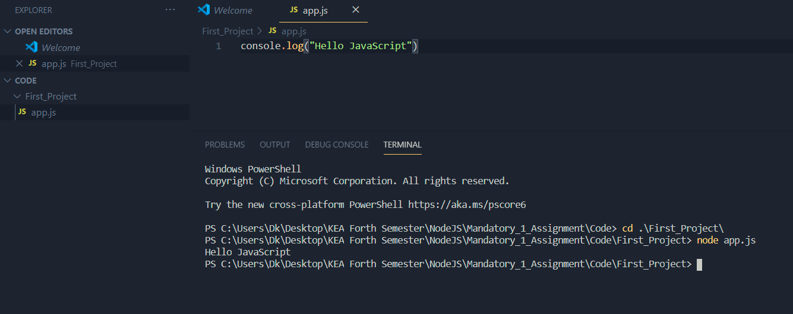

Introduction to JavaScript
JavaScript often abbreviated as JS, is a programming language that conforms to the ECMAScript specification.
JavaScript Files
JavaScript files need to have .js extension: FILE_NAME.js
Let's create a folder called First_Project and a file inside it, called app.js for our first project
Writing our first porgram
Write the following code in app.js file
console.log("Hello JavaScript");
Run it in the terminal using the following command
$ node app.js
Make sure you are in the right directory/folder

Variables in JavaScript
JavaScript variables are containers for storing data values.
Variables can be declared in 3 ways:
var-- with var, variable has global scope to the entire project.let-- with let, variable can be changed laterconst-- with const variable is a constant, it cant be changed after initialization
Data Types
The latest ECMAScript standard defines eight data types:
-
Primitive Data Types
- Boolean -- true and false.
- Number -- An integer or floating point number. For example: 42 or 3.14159.
- BigInt -- An integer with arbitrary precision. For example: 9007199254740992n.
- String -- A sequence of characters that represent a text value. For example: "Howdy"
- Symbol (new in ECMAScript 2015) -- A data type whose instances are unique and immutable.
- null -- A special keyword denoting a null value.
- undefined -- A top-level property whose value is not defined.
-
Non-primitive Data Types
- Object -- Used to store properties and methods. Usually representes real-world objects. Ex: car, human etc
- Array -- Class is a global object that is used in the construction of arrays; which are high-level, list-like objects
- Function -- Function Object consists a set of statements that performs a task or calculates a value
Checking the Data Type of a variable
In order to check variable's data type, we can use typeof command
Ex: console.log(typeof "hello") // String
String Methods
- charAt() -- Returns a character at a specified position inside a string
- concat() -- Concatenates (joins) two or more strings into one
- indexOf()/lastIndexOf() -- Provides the position of the first/last occurrence of a specified text within a string
- match() -- Retrieves the matches of a string against a search pattern
- replace() -- Find and replace specific text in a string
- slice() -- Extracts a section of a string and returns it as a new string
- search() -- Executes a search for a matching text and returns its position
- split() -- Splits a string object into an array of strings at a specified position
- toUpperCase()/toLowerCase() -- Convert strings to uppercase/lowercase
- ETC.
Number & Math Properties
- MAX_VALUE -- The maximum numeric value representable in JavaScript
- MIN_VALUE -- Smallest positive numeric value representable in JavaScript
- NaN -- The “Not-a-Number” value
- NEGATIVE_INFINITY -- The negative Infinity value
- POSITIVE_INFINITY -- Positive Infinity value
- E -- Euler’s number
- LN10 -- Natural logarithm of 10
- PI -- The number PI
- ETC.
Number & Math Methods
- toExponential() -- Returns a string with a rounded number written as exponential notation
- toFixed() -- Returns the string of a number with a specified number of decimals
- toPrecision() -- String of a number written with a specified length
- toString() -- Returns a number as a string
- valueOf() -- Returns a number as a number
- abs(x) -- Returns the absolute (positive) value of x
- ceil(x) -- Value of x rounded up to its nearest integer
- sin()/cos() -- The cosine/sine of x (x is in radians)
- floor(x) --The value of x rounded down to its nearest integer
- max/min(x,y,z,...,n) -- Returns the number with the highest/lowest value
- pow(x,y) -- X to the power of y
- random() -- Returns a random number between 0 and 1
- round(x) -- The value of x rounded to its nearest integer
- sqrt(x) -- Square root of x
- ETC.
Objects
JavaScript objects are containers for named values called properties or methods (functions associated to specific objects). The values are written as key:value pairs. Values can be of any data type.
Creating an Object
We can define (and create) a JavaScript object with an curly brackets { }:
let car = {
name: "Fiat",
model: "500",
color: "white",
weight: 850,
start : function() {//or start(){…}
return "car started";
}
};
Accessing Object's Properties
We can access the object's properties in 2 ways, with the . operator or using square brackets [ " " ]:
car.name;
car["name"];
Deleting Object's Properties
We can delete the object's properties using the delete keyword:
const thisSong = {"description": "The best song in the world."};
delete thisSong.description;
thisSong.about = "Just a tribute.";
console.log(thisSong);
The above lines of code will remove the "description" property and add a new "about" property to the thisSong object.
Arrays
JavaScript arrays are zero-indexed. Arrays can store any data type in a single array
let fruit = ["Banana", "Apple", "Pear"];
let whatever = ["Hello", 2, false, {a:1, b:3}];
Array Methods
- concat() -- Join several arrays into one
- indexOf()/lastIdexOf() -- Returns the first/last position at which a given element appears in an array
- join() -- Combine elements of an array into a single string and return the string
- pop() -- Removes the last element of an array
- push() -- Add a new element at the end
- reverse() -- Reverse the order of the elements in an array
- shift() -- Remove the first element of an array
- unshift() -- Adds a new element to the beginning
- splice() -- Adds elements in a specified way and position
- sort() -- Sorts elements alphabetically
- toString() -- Converts elements to strings
- valueOf() -- Returns the primitive value of the specified object
- ETC.
Functions
Generally speaking, a function is a "subprogram" that can be called by code external (or internal in the case of recursion) to the function. Like the program itself, a function is composed of a sequence of statements called the function body. Values can be passed to a function, and the function will return a value.
In JavaScript, functions are first-class objects, because they can have properties and methods just like any other object. What distinguishes them from other objects is that functions can be called. In brief, they are Function objects.
Types of Functions
-
Named function
Named function is the function that we define it in the code and then call it whenever we need it by referencing its name and passing some arguments to it.
-
Anonymous function
The anonymous functions don’t have names. They need to be tied to something: variable or an event to run.
-
Arrow function
These are anonymous functions with their own special syntax that accept a fixed number of arguments, and operate in the context of their enclosing scope - ie the function or other code where they are defined.
-
Callback function
It is a function that is passed as an argument to other function. So the function which is passed can be called/executed/performed later. Also, callbacks are often used to continue code execution after an asynchronous operation has completed — these are called asynchronous callbacks.
-
Immediately invoked function expression.
It runs as soon as the browser finds it. Invoked function expression runs as soon as the browser encounters it. The benefit of this function is that it runs immediately where it’s located in the code and produces a direct output